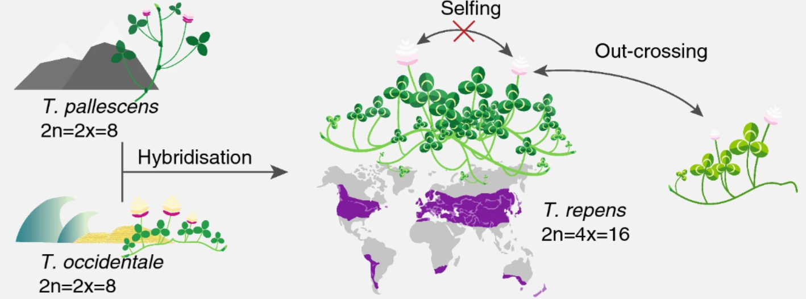
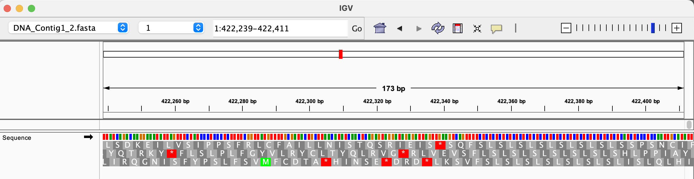
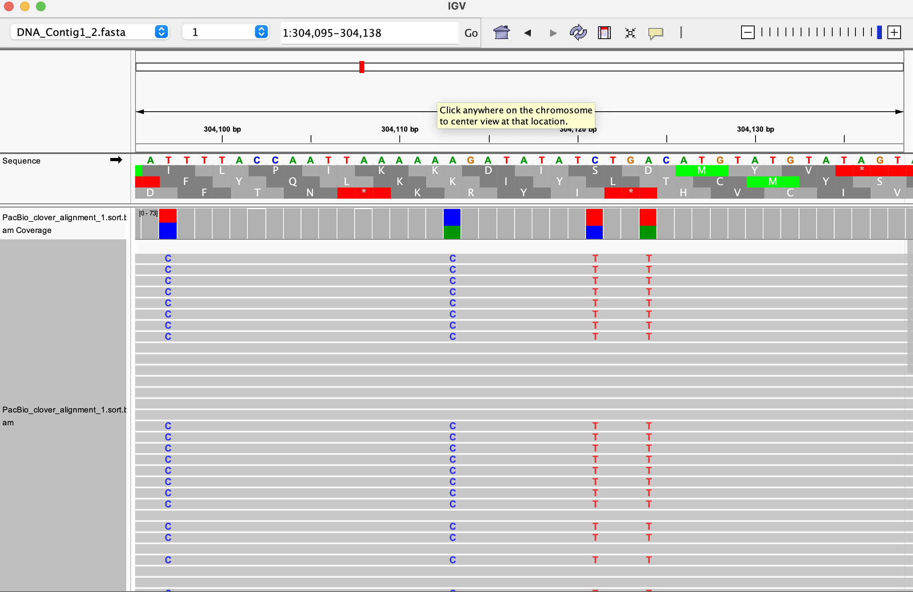

%%bash
#run fastqc
mkdir -p results/fastqc_output
fastqc -q -o results/fastqc_output ../Data/Clover_Data/*.fastq > /dev/null 2>&1
Tutorial description
This tutorial will cover the steps for performing the alignment of raw RNA- and HiFi-sequencing data. You will need to use the software IGV on your computer to visualize some of the output files, which can be easily downloaded once they are produced. At the end of this tutorial you will be able to:
- perform and discuss quality control on raw data in
fastqformat usingFastQCandMultiQC - align HiFi and RNA sequencing data with dedicated tools such as
MiniMap2andSTAR - analyze the quality the alignment with
qualimap
The output of this notebook will be used for the Variant calling analysis and the bulk RNA-sequencing analysis. If you do not want to run this notebook, you can alternatively use the free interactive tool Galaxy to perform the alignment steps. We have uploaded the data on Galaxy, and the manual to perform the exercise is found at the course webpage.
Biological background
White clover (Trifolium repens) is an allotetraploid. It is a relatively young, outcrossing species, which originated during the most recent glaciation around 20,000 years ago by hybridisation of two diploid species, T. occidentale and T. pallescens (see figure below).

This means that it contains genomes originating from two different species within the same nucleus. Normally, white clover is an outbreeding species, but a self-compatible line was used for sequencing the white clover genome (Griffiths et al, 2019). This line will be designated as S10 in the data, indicating that this is the 10th self-fertilized generation. In addition, we have data from a wild clover accession (ecotype) called Tienshan (Ti), which is collected from the Chinese mountains and is adapted to alpine conditions.
We will perform alignment of the data to the white clover’s reference genome containing both T. occidentale and T. pallescens (called contig 1 and contig 2 in the data). We will also perform alignment to each subgenome, and see which are the differences with the quality control tools.
Quality control and mapping
Quality Control
We run FastQC on the PacBio Hifi reads and on two of the Illumina RNA-seq libraries. FastQC does quality control of the raw sequence data, providing an overview of the data which can help identify if there are any problems that should be addressed before further analysis. You can find the report for each file into the folder results/fastqc_output/. The output is in HTML format and can be opened in any browser or in jupyterlab. It is however not easy to compare the various libraries by opening separate reports. To aggregate all the results, we apply the MultiQC software to the reports’ folder. The output of MultiQC is in the directory results/multiqc_output/fastqc_data.
Note: fastqc prints a lot of output conisting of a simple confirmation of execution without error, even when using the option -q, which means quiet. Therefore we added > /dev/null 2>&1 to the command to mute the printing of that output.
%%bash
#run multiqc
multiqc --outdir results/multiqc_output/fastqc_data results/fastqc_outputm /// ]8;id=209685;https://multiqc.info\MultiQC]8;;\ 🔍 | v1.19[0 | multiqc | MultiQC Version v1.28 now available! | multiqc | Search path : /work/Notebooks-dev/results/fastqc_output ��━━━━━━━━━━━━━━━━━━━━━━━━━━━ 100% 50/50 ━━━━━━━━━━�stqc.html8;114m�html | fastqc | Found 25 reports | multiqc | Report : results/multiqc_output/fastqc_data/multiqc_report.html | multiqc | Data : results/multiqc_output/fastqc_data/multiqc_data | multiqc | MultiQC complete
Questions
Visualize the Webpage generated by MultiQC.
Hint: You can find a Help button that offers additional information about the plots for each panel. Focus on the following panels: “Per base sequence quality”, “Per sequence quality scores”…. (“Per base sequence content” always gives a FAIL for RNA-seq data).
- Look at the sequence quality scores: is there a marked difference between HiFi and illumina data?
- Is there anything off in the GC content? Why?
Hifi data mapping
We map the PacBio Hifi reads (Hifi_reads_white_clover.fastq) to the white clover reference sequence (Contig1&2) using minimap2. We run two mapping rounds, using two different preset options (-x in the command) for the technology: * PacBio Hifi mapping settings: map-hifi. * Short reads maping settings: sr.
The map-hifi setting expects long reads and employ algorithms that handle large insertions, deletions, and other structural variations more effectively. The scoring and alignment thresholds are adjusted to account for the longer sequence context. The sr setting xpect shorter reads and optimize for quick, efficient alignment of these short sequences. The focus is on minimizing mismatches and handling the dense packing of short reads.
Next, we create reports of the mapping results by running QualiMap on the two obtained SAM files.
We first need to index the reference fasta files using samtools faidx. This produces files in .fai format containing informations about length of the reference sequence, offset for the quality scores, name of the reference sequence. Click here for a detailed overview.
%%bash
#copy the reference data in the folder reference_data, so that you can write the indexing files
mkdir -p reference_data
cp ../Data/Clover_Data/DNA_Contig1_2.fasta ../Data/Clover_Data/DNA_Contig1.fasta ../Data/Clover_Data/DNA_Contig2.fasta reference_data%%bash
samtools faidx reference_data/DNA_Contig1_2.fasta
samtools faidx reference_data/DNA_Contig1.fasta
samtools faidx reference_data/DNA_Contig2.fastawe create an output folder for the HIFI alignment, and run minimap2 with the settings explained before.
%%bash
mkdir -p results/HIFI_alignment/
minimap2 -a -x map-hifi -o results/HIFI_alignment/PacBio_clover_alignment_1_2_maphifi.sam \
reference_data/DNA_Contig1_2.fasta \
../Data/Clover_Data/Hifi_reads_white_clover.fastq
minimap2 -a -x sr -o results/HIFI_alignment/PacBio_clover_alignment_1_2_sr.sam \
reference_data/DNA_Contig1_2.fasta \
../Data/Clover_Data/Hifi_reads_white_clover.fastq[M::mm_idx_gen::0.036*0.92] collected minimizers
[M::mm_idx_gen::0.048*0.92] sorted minimizers
[M::main::0.048*0.90] loaded/built the index for 2 target sequence(s)
91] mid_occ = 50date::0.051*0.
[M::mm_idx_stat] kmer size: 19; skip: 19; is_hpc: 0; #seq: 2
*0.91] distinct minimizers: 165056 (78.87% are singletons); average occurrences: 1.271; average spacing: 9.959; total length: 2089554
[M::worker_pipeline::20.147*0.96] mapped 4395 sequences
[M::main] Version: 2.28-r1209
[M::main] CMD: minimap2 -a -x map-hifi -o results/HIFI_alignment/PacBio_clover_alignment_1_2_maphifi.sam reference_data/DNA_Contig1_2.fasta ../Data/Clover_Data/Hifi_reads_white_clover.fastq
[M::main] Real time: 20.166 sec; CPU: 19.309 sec; Peak RSS: 1.340 GB
[M::mm_idx_gen::0.043*0.89] collected minimizers
[M::mm_idx_gen::0.081*0.66] sorted minimizers
[M::main::0.081*0.65] loaded/built the index for 2 target sequence(s)
65] mid_occ = 1000te::0.081*0.
[M::mm_idx_stat] kmer size: 21; skip: 11; is_hpc: 0; #seq: 2
84*0.66] distinct minimizers: 278081 (79.60% are singletons); average occurrences: 1.257; average spacing: 5.977; total length: 2089554
[M::worker_pipeline::8.436*0.94] mapped 3075 sequences
[M::worker_pipeline::11.060*0.95] mapped 1320 sequences
[M::main] Version: 2.28-r1209
[M::main] CMD: minimap2 -a -x sr -o results/HIFI_alignment/PacBio_clover_alignment_1_2_sr.sam reference_data/DNA_Contig1_2.fasta ../Data/Clover_Data/Hifi_reads_white_clover.fastq
[M::main] Real time: 11.070 sec; CPU: 10.539 sec; Peak RSS: 0.185 GBsamtools sort is used to sort the alignment with left-to-right coordinates. The output is in .bam format, with .sam files in input (Note that you could have gotten .bam files from minimap2 with a specific option).
%%bash
samtools sort results/HIFI_alignment/PacBio_clover_alignment_1_2_maphifi.sam \
-o results/HIFI_alignment/PacBio_clover_alignment_1_2_maphifi.sort.bam
samtools sort results/HIFI_alignment/PacBio_clover_alignment_1_2_sr.sam \
-o results/HIFI_alignment/PacBio_clover_alignment_1_2_sr.sort.bamsamtools index creates the index for the bam file, stored in .bai format. The index file lets programs access any position into the aligned data without reading the whole file, which would take too much time.
%%bash
samtools index results/HIFI_alignment/PacBio_clover_alignment_1_2_maphifi.sort.bam
samtools index results/HIFI_alignment/PacBio_clover_alignment_1_2_sr.sort.bamRun quality control on both files
%%bash
qualimap bamqc -bam results/HIFI_alignment/PacBio_clover_alignment_1_2_maphifi.sort.bam \
-outdir results/qualimap_output/PacBio_clover_alignment_1_2_maphifi
qualimap bamqc -bam results/HIFI_alignment/PacBio_clover_alignment_1_2_sr.sort.bam \
-outdir results/qualimap_output/PacBio_clover_alignment_1_2_srJava memory size is set to 1200M
Launching application...
QualiMap v.2.3
Built on 2023-05-19 16:57
Selected tool: bamqc
Available memory (Mb): 32
Max memory (Mb): 1216
Starting bam qc....
Loading sam header...
Loading locator...
Loading reference...
Number of windows: 400, effective number of windows: 401
Chunk of reads size: 1000
Number of threads: 1
Processed 50 out of 401 windows...
Processed 100 out of 401 windows...
Processed 150 out of 401 windows...
Processed 200 out of 401 windows...
Processed 250 out of 401 windows...
Processed 300 out of 401 windows...
Processed 350 out of 401 windows...
Processed 400 out of 401 windows...
Total processed windows:401
Number of reads: 4395
Number of valid reads: 4810
nd reads:0correct stra
Inside of regions...
Num mapped reads: 4395
Num mapped first of pair: 0
d of pair: 0econ
Num singletons: 0
Time taken to analyze reads: 12
Computing descriptors...
edBases: 70053032
referenceSize: 2089554
numberOfSequencedBases: 69900791
numberOfAs: 23571707
Computing per chromosome statistics...
Computing histograms...
Overall analysis time: 12
end of bam qc
Computing report...
Writing HTML report...
HTML report created successfully
Finished
Java memory size is set to 1200M
Launching application...
QualiMap v.2.3
Built on 2023-05-19 16:57
Selected tool: bamqc
Available memory (Mb): 32
Max memory (Mb): 1216
Starting bam qc....
Loading sam header...
Loading locator...
Loading reference...
Number of windows: 400, effective number of windows: 401
Chunk of reads size: 1000
Number of threads: 1
Processed 50 out of 401 windows...
Processed 100 out of 401 windows...
Processed 150 out of 401 windows...
Processed 200 out of 401 windows...
Processed 250 out of 401 windows...
Processed 300 out of 401 windows...
Processed 350 out of 401 windows...
Processed 400 out of 401 windows...
Total processed windows:401
Number of reads: 4395
Number of valid reads: 9636
nd reads:0correct stra
Inside of regions...
Num mapped reads: 4395
Num mapped first of pair: 0
d of pair: 0econ
Num singletons: 0
Time taken to analyze reads: 9
Computing descriptors...
dBases: 37081818
referenceSize: 2089554
numberOfSequencedBases: 37026119
numberOfAs: 12432521
Computing per chromosome statistics...
Computing histograms...
Overall analysis time: 9
end of bam qc
Computing report...
Writing HTML report...
HTML report created successfully
FinishedFor easier comparison, we can again collapse the two reports into a single one using MultiQC, in the same way we did for putting together the other reports from fastQC.
%%bash
#run multiqc
multiqc --outdir results/qualimap_output results/qualimap_output/// ]8;id=63516;https://multiqc.info\MultiQC]8;;\ 🔍 | v1.19 | multiqc | MultiQC Version v1.28 now available! | multiqc | Search path : /work/Notebooks-dev/results/qualimap_output ��━━━━━━━━━━━━━━━━━━━━━━━━━━━ 100% 92/92 ━━━━━━━━━━�t/PacBio_clover_alignmen | qualimap | Found 2 BamQC reports | multiqc | Report : results/qualimap_output/multiqc_report.html | multiqc | Data : results/qualimap_output/multiqc_data | multiqc | MultiQC complete
Now you can visualize the report generated, which is in results/qualimap_output/multiqc_report.html.
Next, we map the white clover PacBio Hifi reads to contig1 and contig2 separately, using the setting you selected at the previous step (let’s say map-hifi was chosen, but you are free to change this setting in the commands). As the two contigs represent the two white clover subgenomes, this mapping will allow you to see the two subgenome haplotypes and call subgenome SNPs.
%%bash
minimap2 -a -x map-hifi -o results/HIFI_alignment/PacBio_clover_alignment_1.sam \
reference_data/DNA_Contig1.fasta \
../Data/Clover_Data/Hifi_reads_white_clover.fastq[M::mm_idx_gen::0.021*0.85] collected minimizers
[M::mm_idx_gen::0.028*0.84] sorted minimizers
[M::main::0.028*0.83] loaded/built the index for 1 target sequence(s)
83] mid_occ = 50date::0.029*0.
[M::mm_idx_stat] kmer size: 19; skip: 19; is_hpc: 0; #seq: 1
*0.84] distinct minimizers: 91166 (91.66% are singletons); average occurrences: 1.139; average spacing: 9.939; total length: 1031631
[M::worker_pipeline::69.430*0.96] mapped 4395 sequences
[M::main] Version: 2.28-r1209
[M::main] CMD: minimap2 -a -x map-hifi -o results/HIFI_alignment/PacBio_clover_alignment_1.sam reference_data/DNA_Contig1.fasta ../Data/Clover_Data/Hifi_reads_white_clover.fastq
[M::main] Real time: 69.444 sec; CPU: 66.821 sec; Peak RSS: 1.560 GB%%bash
minimap2 -a -x map-hifi -o results/HIFI_alignment/PacBio_clover_alignment_2.sam \
reference_data/DNA_Contig2.fasta \
../Data/Clover_Data/Hifi_reads_white_clover.fastq[M::mm_idx_gen::0.021*0.88] collected minimizers
[M::mm_idx_gen::0.028*0.86] sorted minimizers
[M::main::0.029*0.84] loaded/built the index for 1 target sequence(s)
85] mid_occ = 50date::0.030*0.
[M::mm_idx_stat] kmer size: 19; skip: 19; is_hpc: 0; #seq: 1
*0.85] distinct minimizers: 97892 (93.26% are singletons); average occurrences: 1.083; average spacing: 9.980; total length: 1057923
[M::worker_pipeline::69.167*0.96] mapped 4395 sequences
[M::main] Version: 2.28-r1209
o_clover_alignment_2.sam reference_data/DNA_Contig2.fasta ../Data/Clover_Data/Hifi_reads_white_clover.fastq
[M::main] Real time: 69.173 sec; CPU: 66.552 sec; Peak RSS: 1.339 GBSort the bam files and create their index using samtools
%%bash
samtools sort results/HIFI_alignment/PacBio_clover_alignment_1.sam -o results/HIFI_alignment/PacBio_clover_alignment_1.sort.bam
samtools sort results/HIFI_alignment/PacBio_clover_alignment_2.sam -o results/HIFI_alignment/PacBio_clover_alignment_2.sort.bam%%bash
samtools index results/HIFI_alignment/PacBio_clover_alignment_1.sort.bam
samtools index results/HIFI_alignment/PacBio_clover_alignment_2.sort.bamPerform quality control
%%bash
mkdir -p results/qualimap_output
qualimap bamqc -bam results/HIFI_alignment/PacBio_clover_alignment_1.sort.bam -outdir results/qualimap_output/PacBio_clover_alignment_1Java memory size is set to 1200M
Launching application...
QualiMap v.2.3
Built on 2023-05-19 16:57
Selected tool: bamqc
Available memory (Mb): 32
Max memory (Mb): 1216
Starting bam qc....
Loading sam header...
Loading locator...
Loading reference...
Number of windows: 400, effective number of windows: 400
Chunk of reads size: 1000
Number of threads: 1
Processed 50 out of 400 windows...
Processed 100 out of 400 windows...
Processed 150 out of 400 windows...
Processed 200 out of 400 windows...
Processed 250 out of 400 windows...
Processed 300 out of 400 windows...
Processed 350 out of 400 windows...
Processed 400 out of 400 windows...
Total processed windows:400
Number of reads: 4395
Number of valid reads: 8792
Number of correct strand reads:0
Inside of regions...
Num mapped reads: 4337
Num mapped first of pair: 0
Num mapped second of pair: 0
Num singletons: 0
Time taken to analyze reads: 7
Computing descriptors...
numberOfMappedBases: 53994557
referenceSize: 1031631
numberOfSequencedBases: 51985968
numberOfAs: 17481677
Computing per chromosome statistics...
Computing histograms...
Overall analysis time: 7
end of bam qc
Computing report...
Writing HTML report...
HTML report created successfully
Finished%%bash
qualimap bamqc -bam results/HIFI_alignment/PacBio_clover_alignment_2.sort.bam -outdir results/qualimap_output/PacBio_clover_alignment_2Java memory size is set to 1200M
Launching application...
QualiMap v.2.3
Built on 2023-05-19 16:57
Selected tool: bamqc
Available memory (Mb): 32
Max memory (Mb): 1216
Starting bam qc....
Loading sam header...
Loading locator...
Loading reference...
Number of windows: 400, effective number of windows: 400
Chunk of reads size: 1000
Number of threads: 1
Processed 50 out of 400 windows...
Processed 100 out of 400 windows...
Processed 150 out of 400 windows...
Processed 200 out of 400 windows...
Processed 250 out of 400 windows...
Processed 300 out of 400 windows...
Processed 350 out of 400 windows...
Processed 400 out of 400 windows...
Total processed windows:400
Number of reads: 4395
Number of valid reads: 9164
nd reads:0correct stra
Inside of regions...
Num mapped reads: 4393
Num mapped first of pair: 0
d of pair: 0econ
Num singletons: 0
Time taken to analyze reads: 8
Computing descriptors...
dBases: 54946431
referenceSize: 1057923
numberOfSequencedBases: 53173617
numberOfAs: 17875243
Computing per chromosome statistics...
Computing histograms...
Overall analysis time: 8
end of bam qc
Computing report...
Writing HTML report...
HTML report created successfully
Finished%%bash
#run multiqc
multiqc --outdir results/qualimap_output results/qualimap_outputm /// ]8;id=195913;https://multiqc.info\MultiQC]8;;\ 🔍 | v1.19[0 | multiqc | MultiQC Version v1.28 now available! | multiqc | Search path : /work/Notebooks-dev/results/qualimap_output ��━━━━━━━━━━━━━━━━━━━━━━━━━━━ 100% 185/185 ━━━━━━━━�p_output/PacBio_clover | qualimap | Found 4 BamQC reports | multiqc | Existing reports found, adding suffix to filenames. Use '--force' to overwrite. | multiqc | Report : results/qualimap_output/multiqc_report_1.html | multiqc | Data : results/qualimap_output/multiqc_data_1 | multiqc | MultiQC complete
Task: IGV visualization and Questions
Now you can inspect the alignment files in IGV.
First, you will need to download the reference fasta sequence in
../Data/Clover_Data/DNA_Contig1_2.fastaand import it into IGV. You can do the same for the filesDNA_Contig1.fastaandDNA_Contig2.fastathat you might need later. In IGV, this is done with the menuGenomes --> Load Genome from filemenu and by selecting the relevant fasta file. Then, choose the reference you need from the drop-down menu (see figure below).
You will not yet see much, but you can choose one of the two subgenomes (contig 1 or 2) and double click on a chromosome position to inspect the reference sequence. The next step will visualize the mapped files on IGV.Each mapped genome can be seen in IGV against the reference file of choice. To load an aligned file, first download it together with the index file in
.baiformat. For example, you need to download bothresults/HIFI_alignment/PacBio_clover_alignment_1.sort.bamandresults/HIFI_alignment/PacBio_clover_alignment_1.sort.bam.baito see this alignment (you need to open only the.bamfile with IGV). If you open more files, their alignments will be distributed in the IGV interface, and you can change the size of each visualization yourself (below shown with only one opened alignment).
Now compare in IGV the two bam files PacBio_clover_alignment_1.sort.bam and PacBio_clover_alignment_2.sort.bam.
- What do you observe when comparing the two BAM files?
- Have a look at the polymorphic regions in IGV. Are they true polymorphisms?
Add to the visualization the third alignment PacBio_clover_alignment_1_2_maphifi.sort.bam in IGV.
- Why do you see fluctuations in coverage and large regions without any apparent subgenome SNPs?
- What are the major differences between the stats for the reads mapped to Contigs1&2 versus contig1 and contig2? What is your interpretation of the differences?
RNA-seq mapping
In the ../Data folder you will find 24 RNA-seq libraries, 12 S10 libraries and 12 Tienshan libraries. Each library is paired-end, which is denoted by R1 and R2 at the end of two files having the same name, such as S10_1_1.R1.fastq and S10_1_1.R2.fastq. We will align each library separately and then merge the alignments to create two final samples for S10 and Tienshan.
First, we need to create a genome file for the reference fasta file of contigs 1 and 2. This is done with STAR, using the option --runMode genomeGenerate. We also need to convert the gene annotation from gff to gtf format with gffread to allow counting gene transcripts. STAR is a very complex tool with many options, so it is always useful to have a reference manual.
%%bash
gffread -T -o reference_data/white_clover_genes.gtf ../Data/Clover_Data/white_clover_genes.gff%%bash
STAR --runThreadN 8 \
--runMode genomeGenerate \
--genomeDir results/STAR_output/indexing_contigs_1_2 \
--genomeFastaFiles reference_data/DNA_Contig1_2.fasta \
--sjdbGTFfile reference_data/white_clover_genes.gtf STAR --runThreadN 8 --runMode genomeGenerate --genomeDir results/STAR_output/indexing_contigs_1_2 --genomeFastaFiles reference_data/DNA_Contig1_2.fasta --sjdbGTFfile reference_data/white_clover_genes.gtf
AR.master/source.7.10a compiled: 2022-01-14T18:50:00-05:00 :/home/dobin/data/STAR/STARcode/ST
May 21 09:41:10 ..... started STAR run!!!!! WARNING: Could not move Log.out file from ./Log.out into results/STAR_output/indexing_contigs_1_2/Log.out. Will keep ./Log.out
May 21 09:41:10 ... starting to generate Genome files
May 21 09:41:10 ..... processing annotations GTF!!!!! WARNING: --genomeSAindexNbases 14 is too large for the genome size=2089554, which may cause seg-fault at the mapping step. Re-run genome generation with recommended --genomeSAindexNbases 9May 21 09:41:10 ... starting to sort Suffix Array. This may take a long time...
May 21 09:41:10 ... sorting Suffix Array chunks and saving them to disk...
May 21 09:41:11 ... loading chunks from disk, packing SA...
May 21 09:41:11 ... finished generating suffix array
May 21 09:41:11 ... generating Suffix Array index
May 21 09:41:13 ... completed Suffix Array index
May 21 09:41:13 ..... inserting junctions into the genome indices
May 21 09:41:20 ... writing Genome to disk ...
May 21 09:41:20 ... writing Suffix Array to disk ...
May 21 09:41:20 ... writing SAindex to disk
May 21 09:41:20 ..... finished successfullyWe got a warning saying
!!!!! WARNING: --genomeSAindexNbases 14 is too large for the genome size=2089554, which may cause seg-fault at the mapping step. Re-run genome generation with recommended --genomeSAindexNbases 9meaning we need shorter strings of bases (9 bases instead of 14) to be indexed, as our reference genome is very short, and too long strings would cause many alignment errors. So we rerun the command with the suggested option.
%%bash
STAR --runThreadN 8 \
--runMode genomeGenerate \
--genomeDir results/STAR_output/indexing_contigs_1_2 \
--genomeFastaFiles reference_data/DNA_Contig1_2.fasta \
--sjdbGTFfile reference_data/white_clover_genes.gtf \
--genomeSAindexNbases 9 STAR --runThreadN 8 --runMode genomeGenerate --genomeDir results/STAR_output/indexing_contigs_1_2 --genomeFastaFiles reference_data/DNA_Contig1_2.fasta --sjdbGTFfile reference_data/white_clover_genes.gtf --genomeSAindexNbases 9
in/data/STAR/STARcode/STAR.master/source01-14T18:50:00-05:00 :/home/dob
May 21 09:41:21 ..... started STAR run!!!!! WARNING: Could not move Log.out file from ./Log.out into results/STAR_output/indexing_contigs_1_2/Log.out. Will keep ./Log.out
May 21 09:41:21 ... starting to generate Genome files
May 21 09:41:21 ..... processing annotations GTF
May 21 09:41:21 ... starting to sort Suffix Array. This may take a long time...
May 21 09:41:21 ... sorting Suffix Array chunks and saving them to disk...
May 21 09:41:22 ... loading chunks from disk, packing SA...
May 21 09:41:22 ... finished generating suffix array
May 21 09:41:22 ... generating Suffix Array index
May 21 09:41:22 ... completed Suffix Array index
May 21 09:41:22 ..... inserting junctions into the genome indices
May 21 09:41:22 ... writing Genome to disk ...
May 21 09:41:22 ... writing Suffix Array to disk ...
May 21 09:41:22 ... writing SAindex to disk
May 21 09:41:22 ..... finished successfullyWe use again STAR to align every single library for S10. We extract the library name of each file and run STAR through each pair of files. Note that plant introns are very rarely more than 5000 bp and that you are mapping to two homoeologous contigs that show high similarity, especially in genic regions. We set the maximum size to 5000 using --alignIntronMax 5000.
%%bash
for i in `ls ../Data/Clover_Data/S10*.R1.fastq`
do
PREFIXNAME=`basename $i .R1.fastq`
echo "###############################################"
echo "##### ALIGNING PAIRED-END READS "$PREFIXNAME
echo "###############################################"
STAR --genomeDir results/STAR_output/indexing_contigs_1_2/ \
--runThreadN 8 \
--runMode alignReads \
--readFilesIn ../Data/Clover_Data/$PREFIXNAME.R1.fastq ../Data/Clover_Data/$PREFIXNAME.R2.fastq \
--outFileNamePrefix results/STAR_output/S10_align_contigs_1_2/$PREFIXNAME \
--outSAMtype BAM SortedByCoordinate \
--outSAMattributes Standard \
--quantMode GeneCounts \
--alignIntronMax 5000
done###############################################
##### ALIGNING PAIRED-END READS S10_1_1
###################################
STAR --genomeDir results/STAR_output/indexing_contigs_1_2/ --runThreadN 8 --runMode alignReads --readFilesIn ../Data/Clover_Data/S10_1_1.R1.fastq ../Data/Clover_Data/S10_1_1.R2.fastq --outFileNamePrefix results/STAR_output/S10_align_contigs_1_2/S10_1_1 --outSAMtype BAM SortedByCoordinate --outSAMattributes Standard --quantMode GeneCounts --alignIntronMax 5000
22-01-14T18:50:00-05:00 :/home/dobin/data/STAR/STARcode/STAR.master/source
rted STAR run22 ..... sta
May 21 09:41:22 ..... loading genome
May 21 09:41:22 ..... started mapping
May 21 09:41:29 ..... finished mapping
May 21 09:41:29 ..... started sorting BAM
May 21 09:41:30 ..... finished successfully
###############################################
##### ALIGNING PAIRED-END READS S10_1_2
###################################
STAR --genomeDir results/STAR_output/indexing_contigs_1_2/ --runThreadN 8 --runMode alignReads --readFilesIn ../Data/Clover_Data/S10_1_2.R1.fastq ../Data/Clover_Data/S10_1_2.R2.fastq --outFileNamePrefix results/STAR_output/S10_align_contigs_1_2/S10_1_2 --outSAMtype BAM SortedByCoordinate --outSAMattributes Standard --quantMode GeneCounts --alignIntronMax 5000
22-01-14T18:50:00-05:00 :/home/dobin/data/STAR/STARcode/STAR.master/source
rted STAR run30 ..... sta
May 21 09:41:30 ..... loading genome
May 21 09:41:30 ..... started mapping
May 21 09:41:40 ..... finished mapping
May 21 09:41:40 ..... started sorting BAM
May 21 09:41:40 ..... finished successfully
###############################################
##### ALIGNING PAIRED-END READS S10_1_3
###################################
STAR --genomeDir results/STAR_output/indexing_contigs_1_2/ --runThreadN 8 --runMode alignReads --readFilesIn ../Data/Clover_Data/S10_1_3.R1.fastq ../Data/Clover_Data/S10_1_3.R2.fastq --outFileNamePrefix results/STAR_output/S10_align_contigs_1_2/S10_1_3 --outSAMtype BAM SortedByCoordinate --outSAMattributes Standard --quantMode GeneCounts --alignIntronMax 5000
22-01-14T18:50:00-05:00 :/home/dobin/data/STAR/STARcode/STAR.master/source
rted STAR run41 ..... sta
May 21 09:41:41 ..... loading genome
May 21 09:41:41 ..... started mapping
May 21 09:41:51 ..... finished mapping
May 21 09:41:51 ..... started sorting BAM
May 21 09:41:51 ..... finished successfully
###############################################
##### ALIGNING PAIRED-END READS S10_2_1
###################################
STAR --genomeDir results/STAR_output/indexing_contigs_1_2/ --runThreadN 8 --runMode alignReads --readFilesIn ../Data/Clover_Data/S10_2_1.R1.fastq ../Data/Clover_Data/S10_2_1.R2.fastq --outFileNamePrefix results/STAR_output/S10_align_contigs_1_2/S10_2_1 --outSAMtype BAM SortedByCoordinate --outSAMattributes Standard --quantMode GeneCounts --alignIntronMax 5000
22-01-14T18:50:00-05:00 :/home/dobin/data/STAR/STARcode/STAR.master/source
rted STAR run52 ..... sta
May 21 09:41:52 ..... loading genome
May 21 09:41:52 ..... started mapping
May 21 09:42:02 ..... finished mapping
May 21 09:42:02 ..... started sorting BAM
May 21 09:42:02 ..... finished successfully
###############################################
##### ALIGNING PAIRED-END READS S10_2_2
###################################
STAR --genomeDir results/STAR_output/indexing_contigs_1_2/ --runThreadN 8 --runMode alignReads --readFilesIn ../Data/Clover_Data/S10_2_2.R1.fastq ../Data/Clover_Data/S10_2_2.R2.fastq --outFileNamePrefix results/STAR_output/S10_align_contigs_1_2/S10_2_2 --outSAMtype BAM SortedByCoordinate --outSAMattributes Standard --quantMode GeneCounts --alignIntronMax 5000
22-01-14T18:50:00-05:00 :/home/dobin/data/STAR/STARcode/STAR.master/source
rted STAR run02 ..... sta
May 21 09:42:02 ..... loading genome
May 21 09:42:02 ..... started mapping
May 21 09:42:11 ..... finished mapping
May 21 09:42:11 ..... started sorting BAM
May 21 09:42:11 ..... finished successfully
###############################################
##### ALIGNING PAIRED-END READS S10_2_3
###################################
STAR --genomeDir results/STAR_output/indexing_contigs_1_2/ --runThreadN 8 --runMode alignReads --readFilesIn ../Data/Clover_Data/S10_2_3.R1.fastq ../Data/Clover_Data/S10_2_3.R2.fastq --outFileNamePrefix results/STAR_output/S10_align_contigs_1_2/S10_2_3 --outSAMtype BAM SortedByCoordinate --outSAMattributes Standard --quantMode GeneCounts --alignIntronMax 5000
22-01-14T18:50:00-05:00 :/home/dobin/data/STAR/STARcode/STAR.master/source
rted STAR run12 ..... sta
May 21 09:42:12 ..... loading genome
May 21 09:42:12 ..... started mapping
May 21 09:42:22 ..... finished mapping
May 21 09:42:22 ..... started sorting BAM
May 21 09:42:23 ..... finished successfullyDo the same alignment for Tienshan libraries
%%bash
for i in `ls ../Data/Clover_Data/TI*.R1.fastq`
do
PREFIXNAME=`basename $i .R1.fastq`
echo "###############################################"
echo "##### ALIGNING PAIRED-END READS "$PREFIXNAME
echo "###############################################"
STAR --genomeDir results/STAR_output/indexing_contigs_1_2/ \
--runThreadN 8 \
--readFilesIn ../Data/Clover_Data/$PREFIXNAME.R1.fastq ../Data/Clover_Data/$PREFIXNAME.R2.fastq \
--outFileNamePrefix results/STAR_output/TI_align_contigs_1_2/$PREFIXNAME \
--outSAMtype BAM SortedByCoordinate \
--outSAMattributes Standard \
--quantMode GeneCounts \
--alignIntronMax 5000
done###############################################
##### ALIGNING PAIRED-END READS TI_1_1
##################################
STAR --genomeDir results/STAR_output/indexing_contigs_1_2/ --runThreadN 8 --readFilesIn ../Data/Clover_Data/TI_1_1.R1.fastq ../Data/Clover_Data/TI_1_1.R2.fastq --outFileNamePrefix results/STAR_output/TI_align_contigs_1_2/TI_1_1 --outSAMtype BAM SortedByCoordinate --outSAMattributes Standard --quantMode GeneCounts --alignIntronMax 5000
/home/dobin/data/STAR/STARcode/STAR.master/source50:00-05:00 :
May 21 09:42:23 ..... started STAR run
May 21 09:42:23 ..... loading genome
May 21 09:42:23 ..... started mapping
May 21 09:42:31 ..... finished mapping
May 21 09:42:31 ..... started sorting BAM
May 21 09:42:31 ..... finished successfully
###############################################
##### ALIGNING PAIRED-END READS TI_1_2
##################################
STAR --genomeDir results/STAR_output/indexing_contigs_1_2/ --runThreadN 8 --readFilesIn ../Data/Clover_Data/TI_1_2.R1.fastq ../Data/Clover_Data/TI_1_2.R2.fastq --outFileNamePrefix results/STAR_output/TI_align_contigs_1_2/TI_1_2 --outSAMtype BAM SortedByCoordinate --outSAMattributes Standard --quantMode GeneCounts --alignIntronMax 5000
/home/dobin/data/STAR/STARcode/STAR.master/source50:00-05:00 :
May 21 09:42:32 ..... started STAR run
May 21 09:42:32 ..... loading genome
May 21 09:42:32 ..... started mapping
May 21 09:42:39 ..... finished mapping
May 21 09:42:39 ..... started sorting BAM
May 21 09:42:40 ..... finished successfully
###############################################
##### ALIGNING PAIRED-END READS TI_1_3
##################################
STAR --genomeDir results/STAR_output/indexing_contigs_1_2/ --runThreadN 8 --readFilesIn ../Data/Clover_Data/TI_1_3.R1.fastq ../Data/Clover_Data/TI_1_3.R2.fastq --outFileNamePrefix results/STAR_output/TI_align_contigs_1_2/TI_1_3 --outSAMtype BAM SortedByCoordinate --outSAMattributes Standard --quantMode GeneCounts --alignIntronMax 5000
/home/dobin/data/STAR/STARcode/STAR.master/source50:00-05:00 :
May 21 09:42:40 ..... started STAR run
May 21 09:42:40 ..... loading genome
May 21 09:42:40 ..... started mapping
May 21 09:42:48 ..... finished mapping
May 21 09:42:48 ..... started sorting BAM
May 21 09:42:48 ..... finished successfully
###############################################
##### ALIGNING PAIRED-END READS TI_2_1
##################################
STAR --genomeDir results/STAR_output/indexing_contigs_1_2/ --runThreadN 8 --readFilesIn ../Data/Clover_Data/TI_2_1.R1.fastq ../Data/Clover_Data/TI_2_1.R2.fastq --outFileNamePrefix results/STAR_output/TI_align_contigs_1_2/TI_2_1 --outSAMtype BAM SortedByCoordinate --outSAMattributes Standard --quantMode GeneCounts --alignIntronMax 5000
/home/dobin/data/STAR/STARcode/STAR.master/source50:00-05:00 :
May 21 09:42:48 ..... started STAR run
May 21 09:42:48 ..... loading genome
May 21 09:42:48 ..... started mapping
May 21 09:43:00 ..... finished mapping
May 21 09:43:00 ..... started sorting BAM
May 21 09:43:01 ..... finished successfully
###############################################
##### ALIGNING PAIRED-END READS TI_2_2
##################################
STAR --genomeDir results/STAR_output/indexing_contigs_1_2/ --runThreadN 8 --readFilesIn ../Data/Clover_Data/TI_2_2.R1.fastq ../Data/Clover_Data/TI_2_2.R2.fastq --outFileNamePrefix results/STAR_output/TI_align_contigs_1_2/TI_2_2 --outSAMtype BAM SortedByCoordinate --outSAMattributes Standard --quantMode GeneCounts --alignIntronMax 5000
/home/dobin/data/STAR/STARcode/STAR.master/source50:00-05:00 :
May 21 09:43:01 ..... started STAR run
May 21 09:43:01 ..... loading genome
May 21 09:43:01 ..... started mapping
May 21 09:43:10 ..... finished mapping
May 21 09:43:10 ..... started sorting BAM
May 21 09:43:10 ..... finished successfully
###############################################
##### ALIGNING PAIRED-END READS TI_2_3
##################################
STAR --genomeDir results/STAR_output/indexing_contigs_1_2/ --runThreadN 8 --readFilesIn ../Data/Clover_Data/TI_2_3.R1.fastq ../Data/Clover_Data/TI_2_3.R2.fastq --outFileNamePrefix results/STAR_output/TI_align_contigs_1_2/TI_2_3 --outSAMtype BAM SortedByCoordinate --outSAMattributes Standard --quantMode GeneCounts --alignIntronMax 5000
/home/dobin/data/STAR/STARcode/STAR.master/source50:00-05:00 :
May 21 09:43:11 ..... started STAR run
May 21 09:43:11 ..... loading genome
May 21 09:43:11 ..... started mapping
May 21 09:43:21 ..... finished mapping
May 21 09:43:21 ..... started sorting BAM
May 21 09:43:21 ..... finished successfullyRun quality control on each aligned library with MultiQC. In this way there will be a whole report to compare S10 files and Tienshan files.
%%bash
multiqc --outdir results/multiqc_output/TI_STAR_align_1_2 \
results/STAR_output/TI_align_contigs_1_2/m /// ]8;id=677025;https://multiqc.info\MultiQC]8;;\ 🔍 | v1.19[0 | multiqc | MultiQC Version v1.28 now available! | multiqc | Search path : /work/Notebooks-dev/results/STAR_output/TI_align_contigs_1_2 ��━━━━━━━━━━━━━━━━━━━━━━━━━━━ 100% 36/36 ━━━━━━━━━━�output/TI_align_contigs_ | star | Found 6 reports and 6 gene count files | multiqc | Report : results/multiqc_output/TI_STAR_align_1_2/multiqc_report.html | multiqc | Data : results/multiqc_output/TI_STAR_align_1_2/multiqc_data | multiqc | MultiQC complete
%%bash
multiqc --outdir results/multiqc_output/S10_STAR_align_1_2 \
results/STAR_output/S10_align_contigs_1_2/m /// ]8;id=728914;https://multiqc.info\MultiQC]8;;\ 🔍 | v1.19[0 | multiqc | MultiQC Version v1.28 now available! | multiqc | Search path : /work/Notebooks-dev/results/STAR_output/S10_align_contigs_1_2 ��━━━━━━━━━━━━━━━━━━━━━━━━━━━ 100% 36/36 ━━━━━━━━━━�TAR_output/S10_align_con | star | Found 6 reports and 6 gene count files | multiqc | Report : results/multiqc_output/S10_STAR_align_1_2/multiqc_report.html | multiqc | Data : results/multiqc_output/S10_STAR_align_1_2/multiqc_data | multiqc | MultiQC complete
We merge the outputs of each group of aligned libraries. Here is how the files look like for the Tienshan.
!ls -lh results/STAR_output/TI_align_contigs_1_2/TI_*.sortedByCoord.out.bam -rw-r--r-- 1 root root 6.6M May 21 09:42 results/STAR_output/TI_align_contigs_1_2/TI_1_1Aligned.sortedByCoord.out.bam
-rw-r--r-- 1 root root 6.0M May 21 09:42 results/STAR_output/TI_align_contigs_1_2/TI_1_2Aligned.sortedByCoord.out.bam
-rw-r--r-- 1 root root 7.1M May 21 09:42 results/STAR_output/TI_align_contigs_1_2/TI_1_3Aligned.sortedByCoord.out.bam
-rw-r--r-- 1 root root 9.6M May 21 09:43 results/STAR_output/TI_align_contigs_1_2/TI_2_1Aligned.sortedByCoord.out.bam
-rw-r--r-- 1 root root 7.2M May 21 09:43 results/STAR_output/TI_align_contigs_1_2/TI_2_2Aligned.sortedByCoord.out.bam
-rw-r--r-- 1 root root 8.2M May 21 09:43 results/STAR_output/TI_align_contigs_1_2/TI_2_3Aligned.sortedByCoord.out.bamApply samtools merge
%%bash
mkdir -p results/STAR_output/TI_align_contigs_1_2_merge/
samtools merge -f results/STAR_output/TI_align_contigs_1_2_merge/TI.sorted.bam results/STAR_output/TI_align_contigs_1_2/TI_*.sortedByCoord.out.bam %%bash
mkdir -p results/STAR_output/S10_align_contigs_1_2_merge/
samtools merge -f results/STAR_output/S10_align_contigs_1_2_merge/S10.sorted.bam results/STAR_output/S10_align_contigs_1_2/S10_*.sortedByCoord.out.bam Index both merging outputs. A file in format bam.bai will appear in their respective folders.
%%bash
samtools index results/STAR_output/S10_align_contigs_1_2_merge/S10.sorted.bam%%bash
samtools index results/STAR_output/TI_align_contigs_1_2_merge/TI.sorted.bam
Wrapping up
In this exercise, you learned to align various types of data after performing quality control for raw data. We looked at some of the options for the aligners and at how to use some of the basic samtools manipulation programs. The outputs from the RNA alignments will be used for the VCF file analysis in the next notebook, and the RNA alignments will be use for the bulk RNA data analysis.